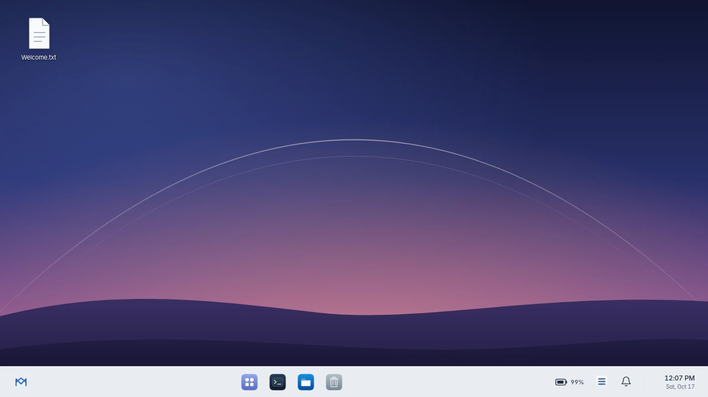
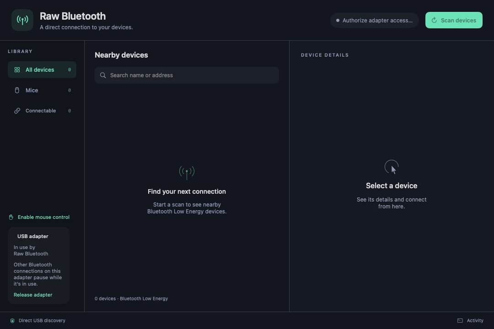

Sai Krishna Reddy Pakkir
Software development
I’m a computer science graduate student at the University of Central Missouri. I build web applications and systems software, and I enjoy working across the stack, from interfaces to hardware.
Open Projects ↗Experience
Innorize Enterprises
Software Engineer Intern · Hyderabad · April–July 2025
Built a responsive Next.js interface and worked on JWT-authenticated REST APIs for Wribate.
Explore WribateUniversity of Central Missouri
Front Desk Assistant · Lee’s Summit · August 2026–present
Sodexo
Student Worker · Warrensburg · April 2026
Graduate studies
University of Central Missouri
Master of Science in Computer Science · August 2025 to expected May 2027
Selected coursework
- CYBR 5310 · Design of Cryptographic Algorithms and Protocols
- CYBR 5800 · Advanced Computer Networking and Security
- DSA 5100 · Programming Foundations for Data Science and AI
- DSA 5200 · Advanced Data Visualization
Projects

MeridianLinux desktop shell · Rust and TypeScript
Raw BluetoothExperimental userspace driver for macOSWribateFull-stack web application · Next.js and MongoDBGet in touch
Skills demonstrated in projects
Rust and TypeScript — Meridian; USB HCI and SwiftUI — Raw Bluetooth; Next.js, Node.js, MongoDB and authenticated REST APIs — Wribate.